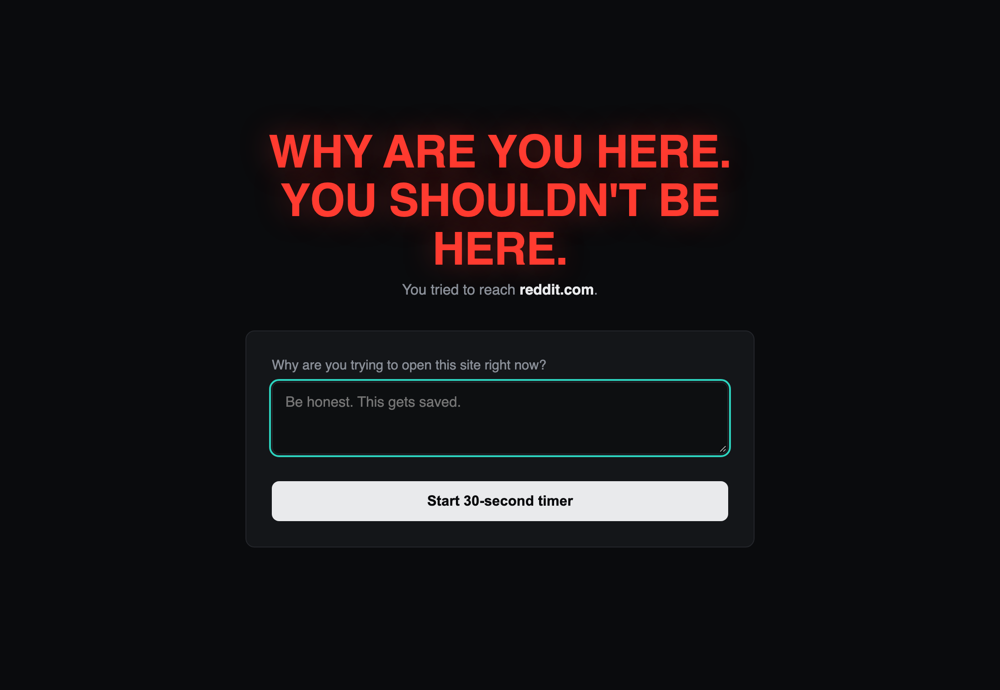
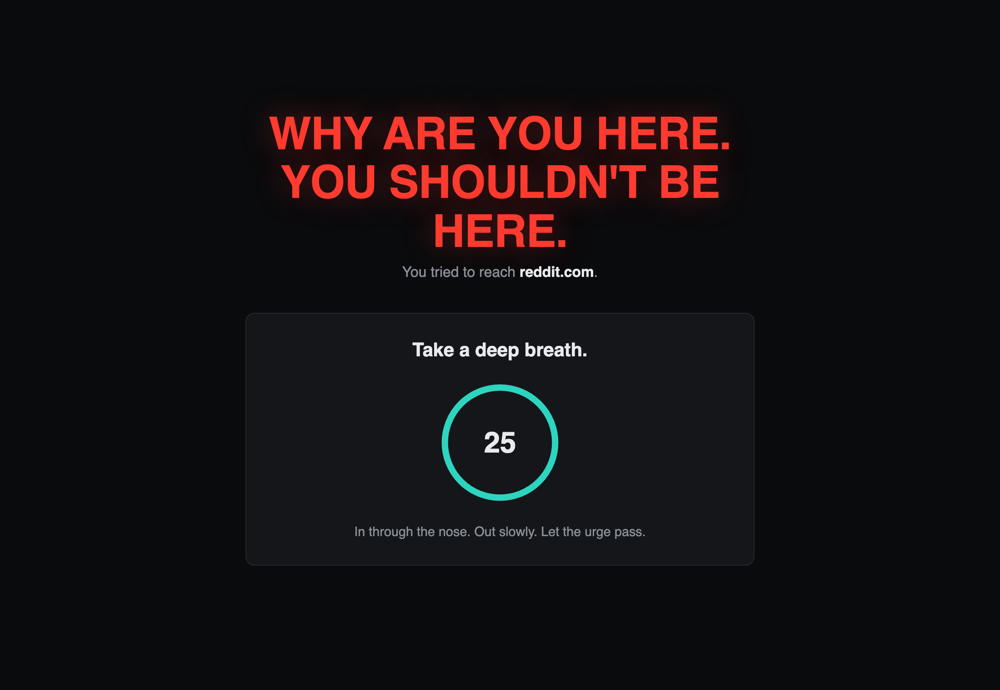
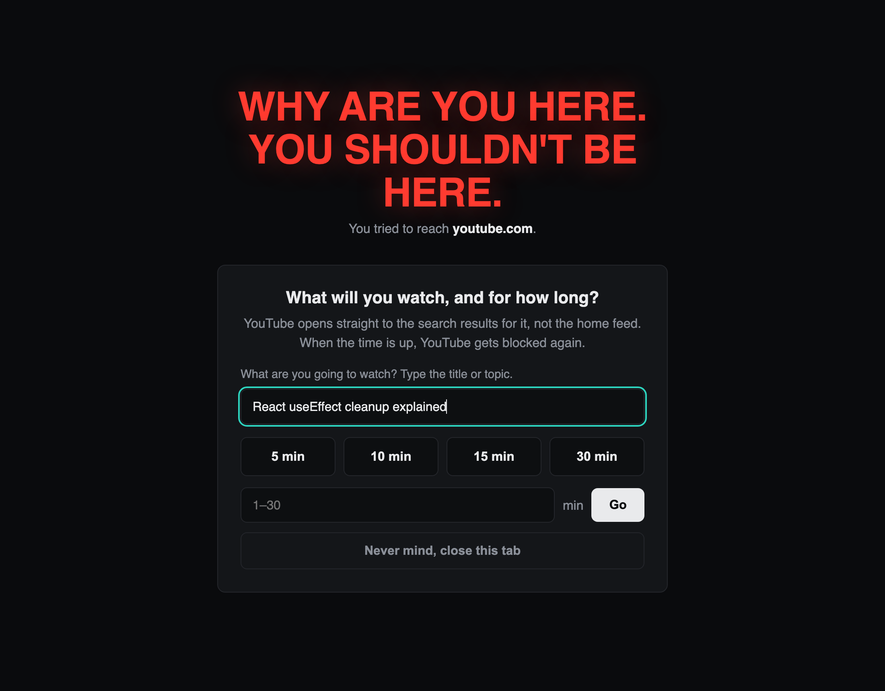
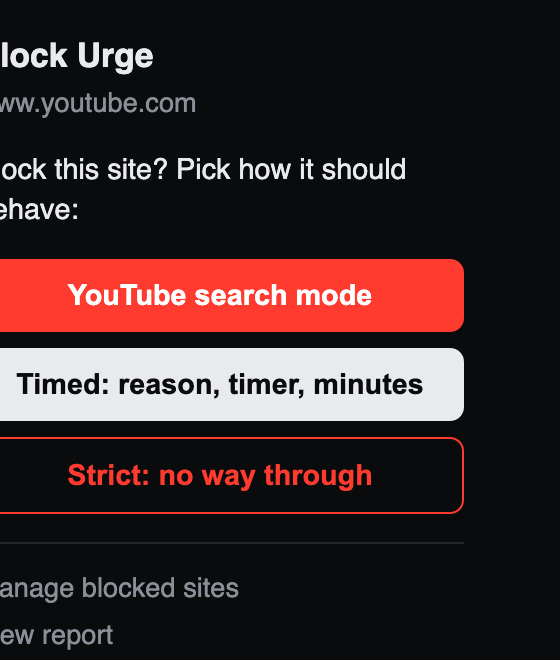
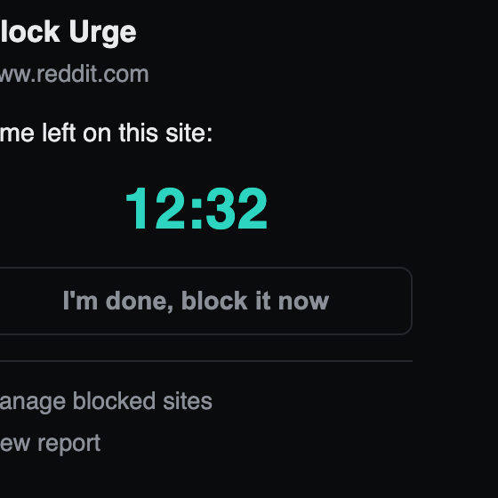
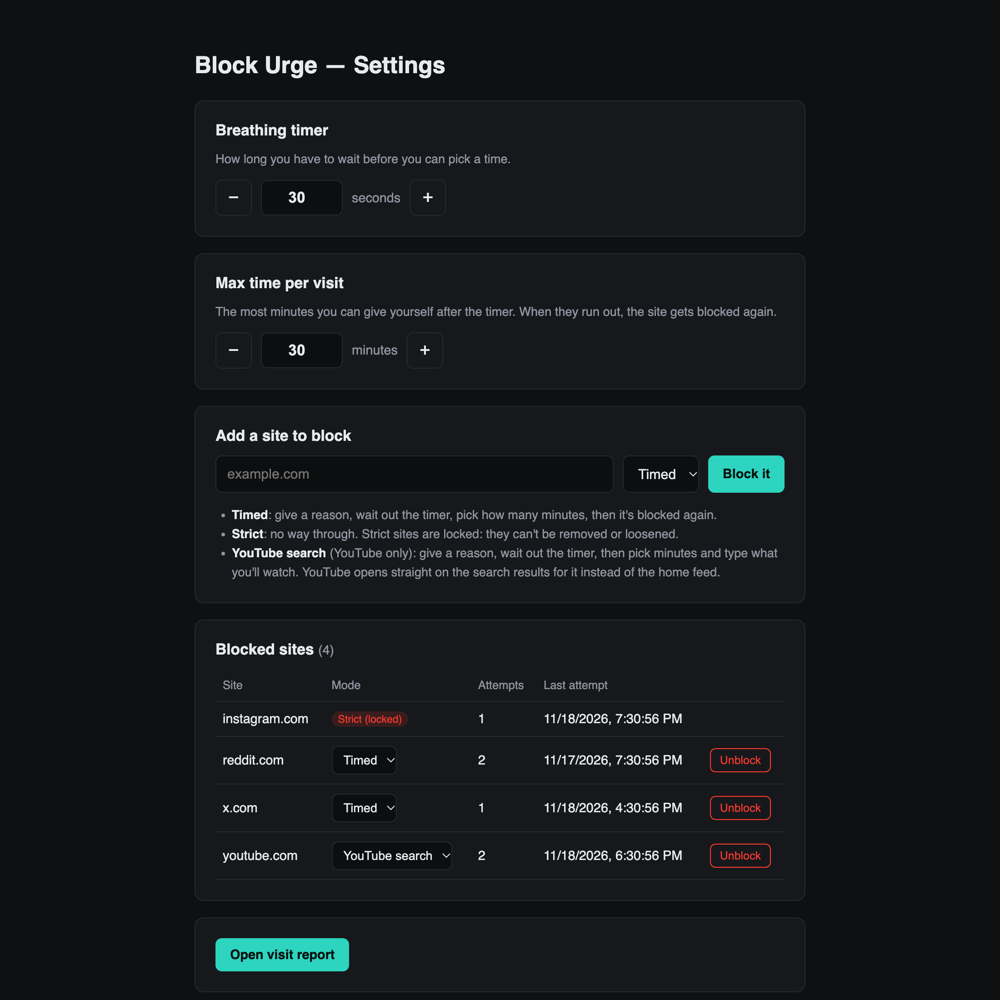
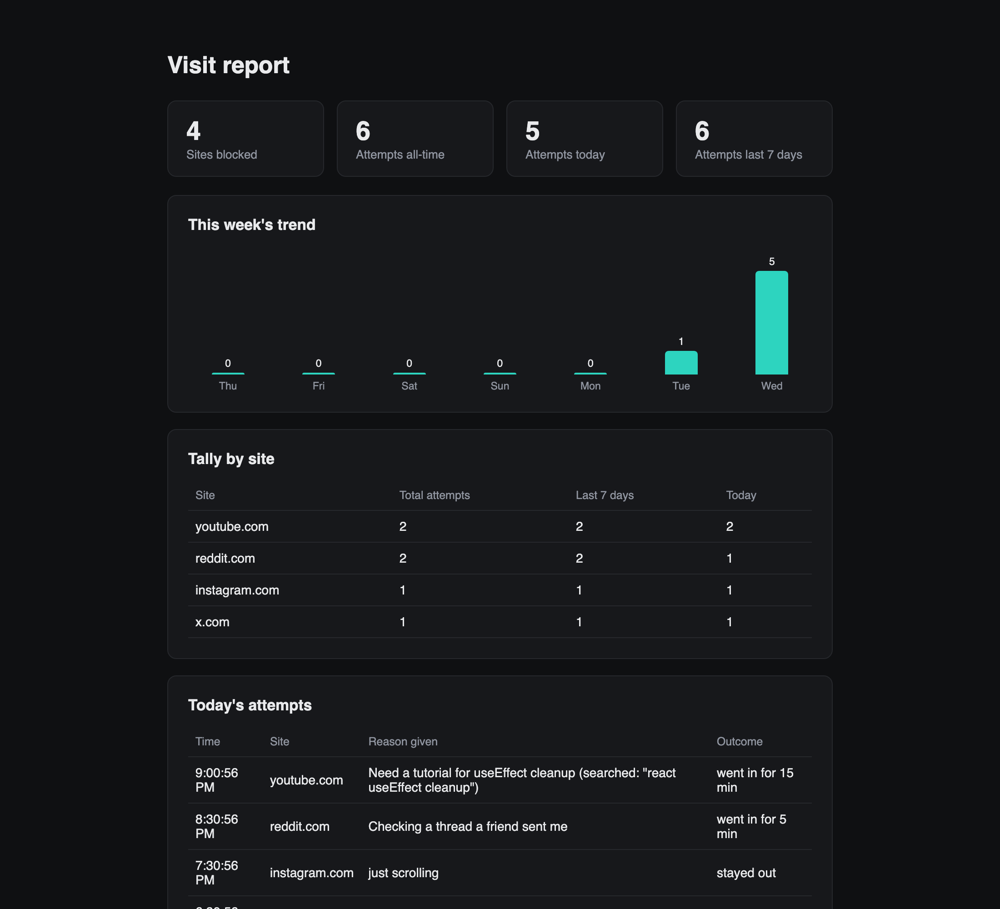

Block Urge is a free Firefox add-on that blocks distracting websites without locking you out for good. It asks why you're there, makes you breathe through a timer, then gives you only the minutes you ask for.
Open a blocked site and you're asked what you came for. Every reason is logged so you can look back later.
Wait out a breathing timer (5 seconds to 10 minutes). It pauses if you switch tabs, so you can't skip it.
Choose how long you need. When the time runs out, every tab on that site goes back to the block page.
| Mode | What happens |
|---|---|
| Timed | Reason, timer, then the minutes you choose. Blocked again when they run out. |
| YouTube search | After the timer you type what you're going to watch. YouTube opens on the search results and skips the home feed. |
| Strict | No way through. Strict sites are locked, so you can't remove them in a weak moment. |
reddit.com also covers www., old. and every other subdomain.






Hard blocks tend to get switched off the first time you actually need the site. Block Urge adds friction instead: a reason and a pause are usually enough to stop a habit visit, and when you really need the site you can still get in for a set time.
Yes. Use YouTube search mode. You land straight on the results for what you said you'd watch.
Block Urge is currently published for Firefox (version 140 and newer).
No. All settings and logs stay in your browser's local storage. Nothing is sent anywhere.